Highlights from our research activities, awards, and community gatherings.
Research Activities
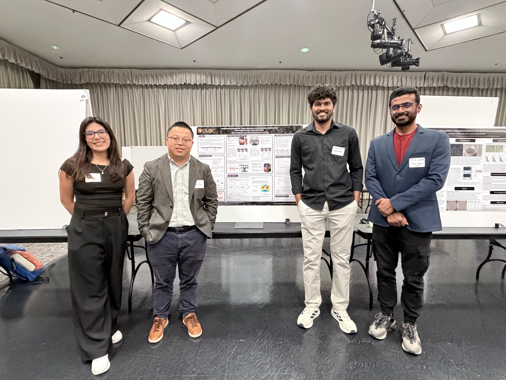
COEIT Research Day 2026Alyssa, Sithumina, and Rishav showcase their research poster.
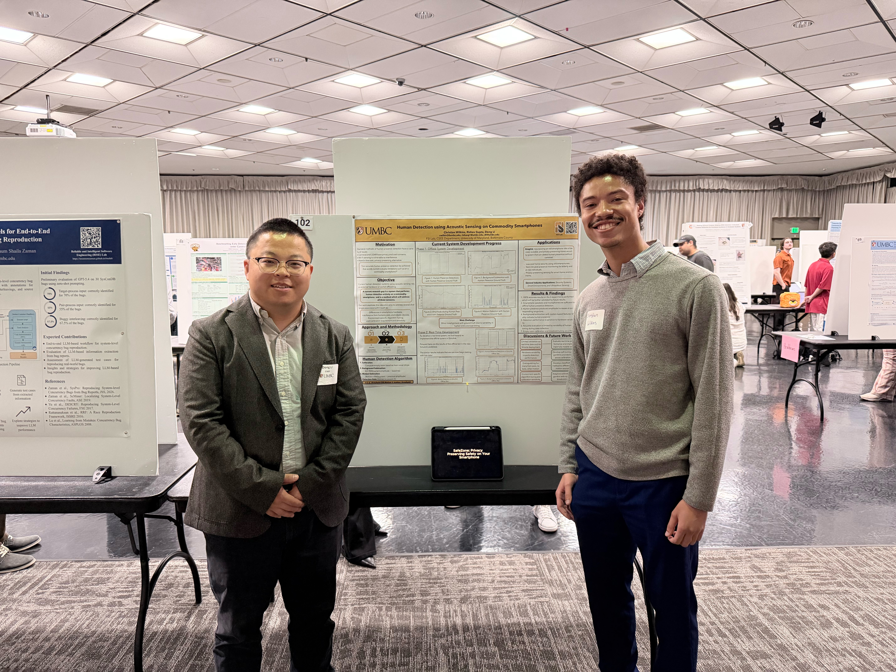
COEIT Research Day 2026Christian introduces the team’s research poster to attendees.
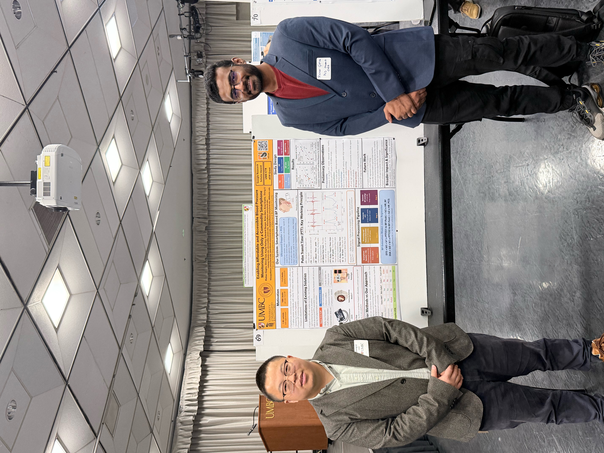
COEIT Research Day 2026Rishav presents the lab’s research poster during the showcase.
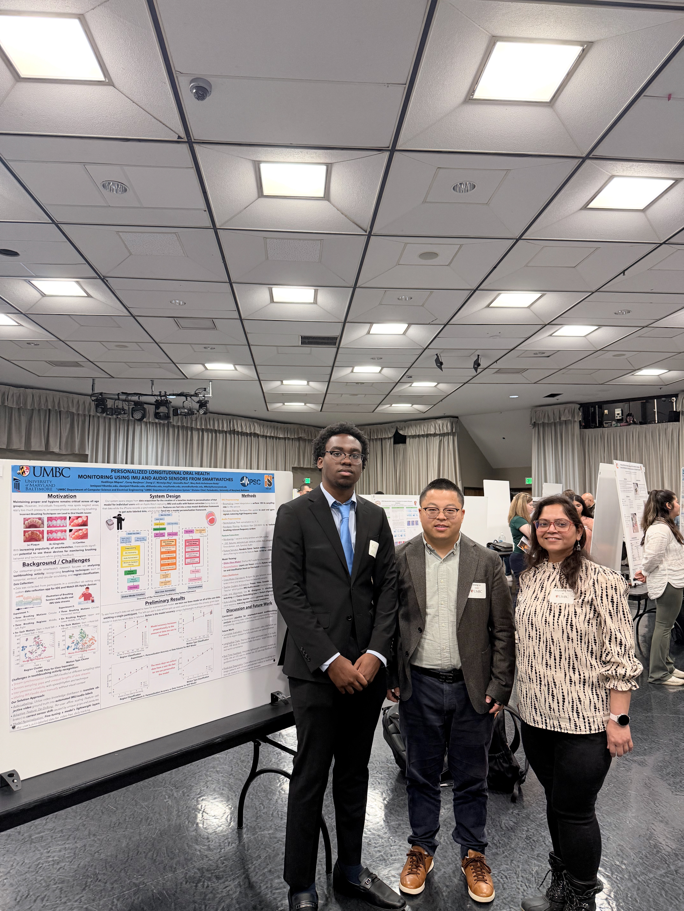
COEIT Research Day 2026Kodi shares his student research with the COEIT community.
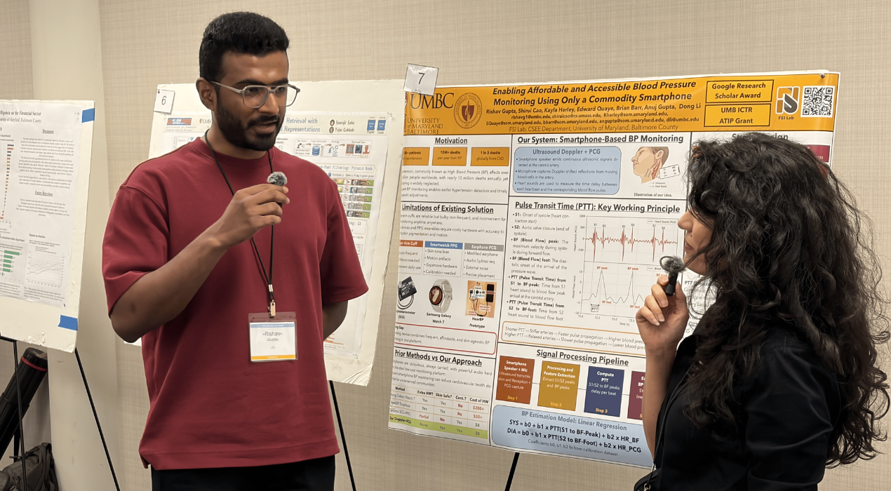
CSEE Research Day 2026Rishav discusses his research with attendees.
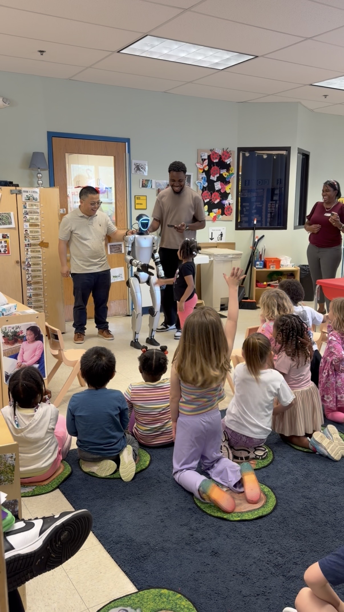
Robot Demo at Local Daycare 2026Sharing interactive robotics with local daycare kids.
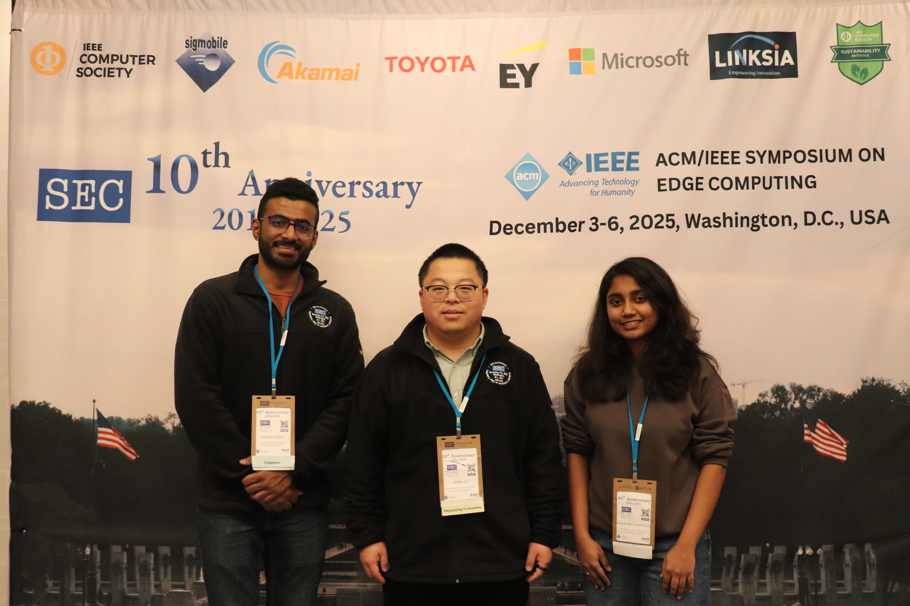
SEC 2025Supporting SEC as Local Chair with Rishav and Dharani serving as volunteers.
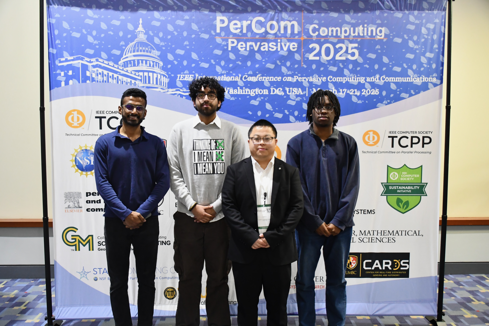
PerCom 2025Rishav, Kodi, and Raiyaan join PerCom to engage with the research community.
Awards & Recognition
COEIT Research Day 2026Rishav receives the Computing for Social Good Award.
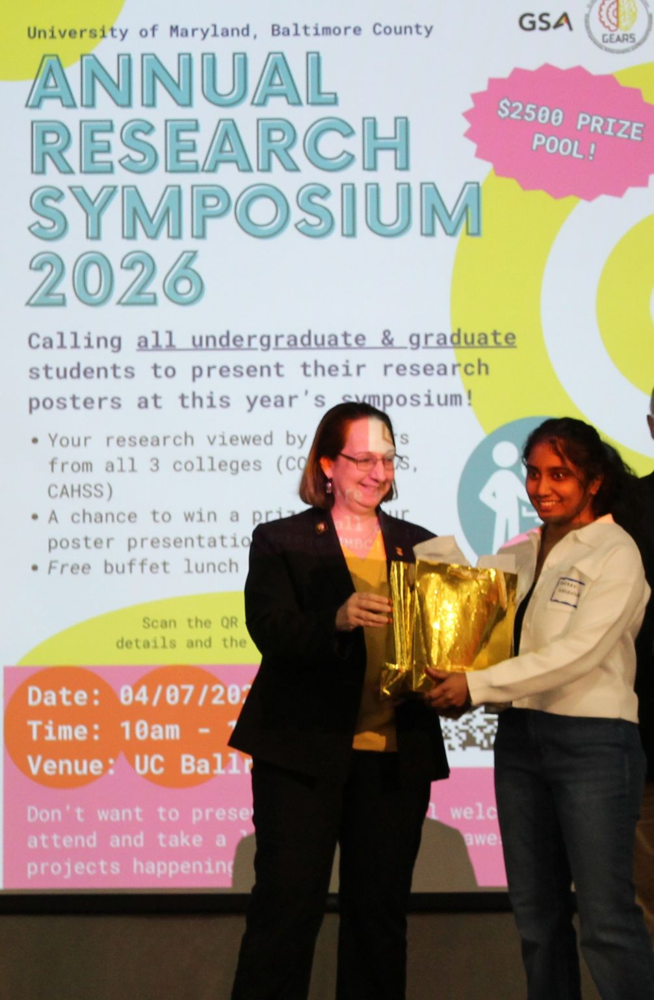
Annual Research Symposium 2026Dharani receives the Best of COEIT Graduate Award.CSEE Research Day 2026Rishav receives the Best Poster Award.
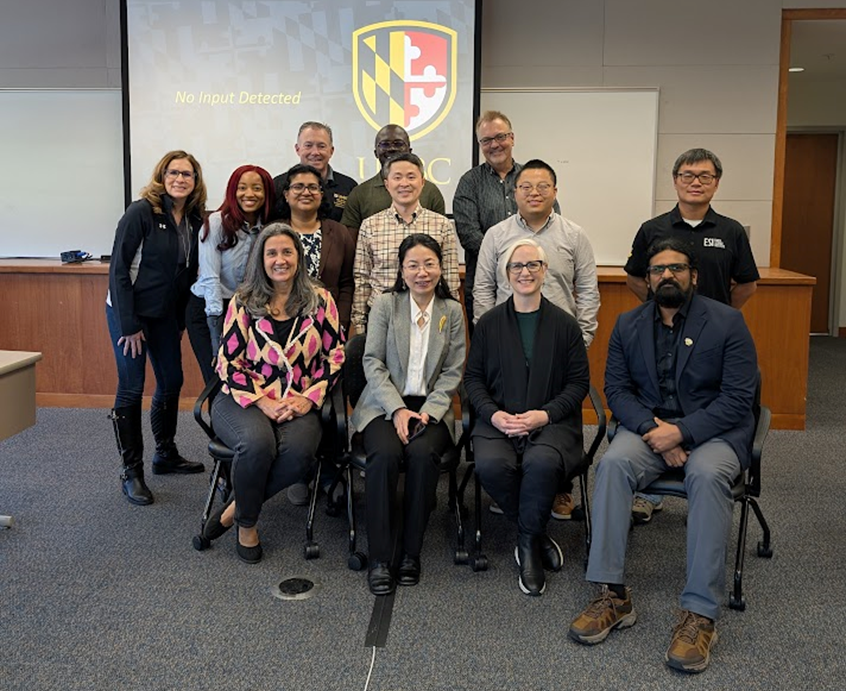
Entrepreneurial Learning Lab 2026Dr. Li participates in the 2026 entrepreneurial development program.
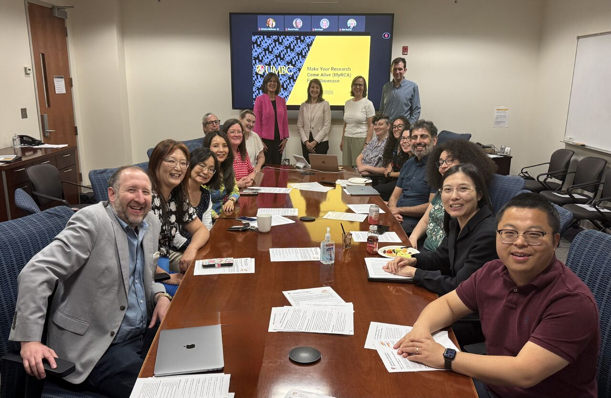
myRCA Showcase 2026Dr. Li participates in UMBC’s Make Your Research Come Alive (myRCA) showcase.
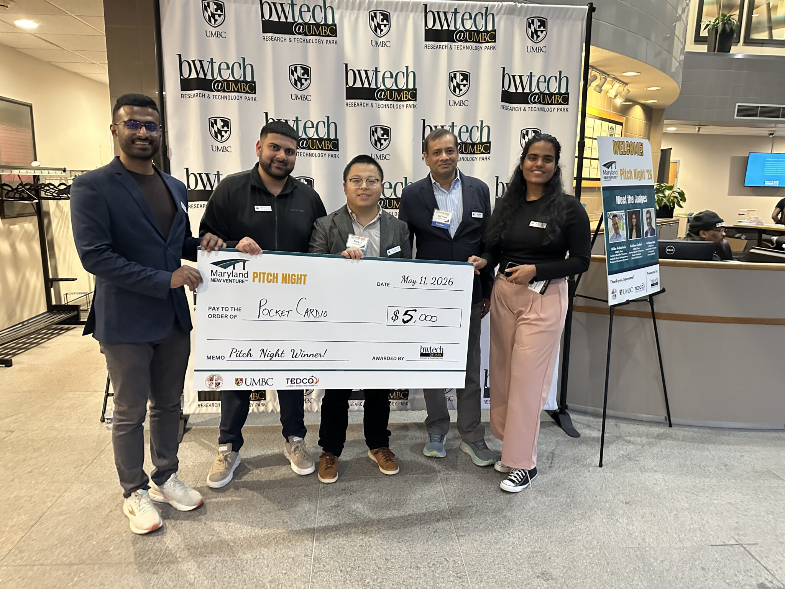
MD New Venture Program 2026Our team, PocketCardio, earns first place at the 2026 pitch night.McNair Scholars Program 2025Celebrating scholarly achievement and mentorship.
Community Gatherings
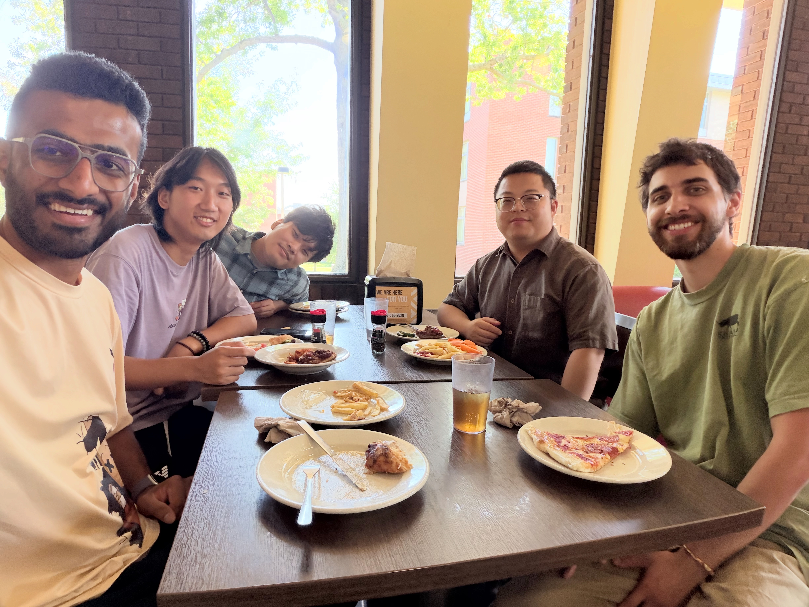
Group Meal · September 2026Gathering for a fall meal with the lab community at True Grit's.
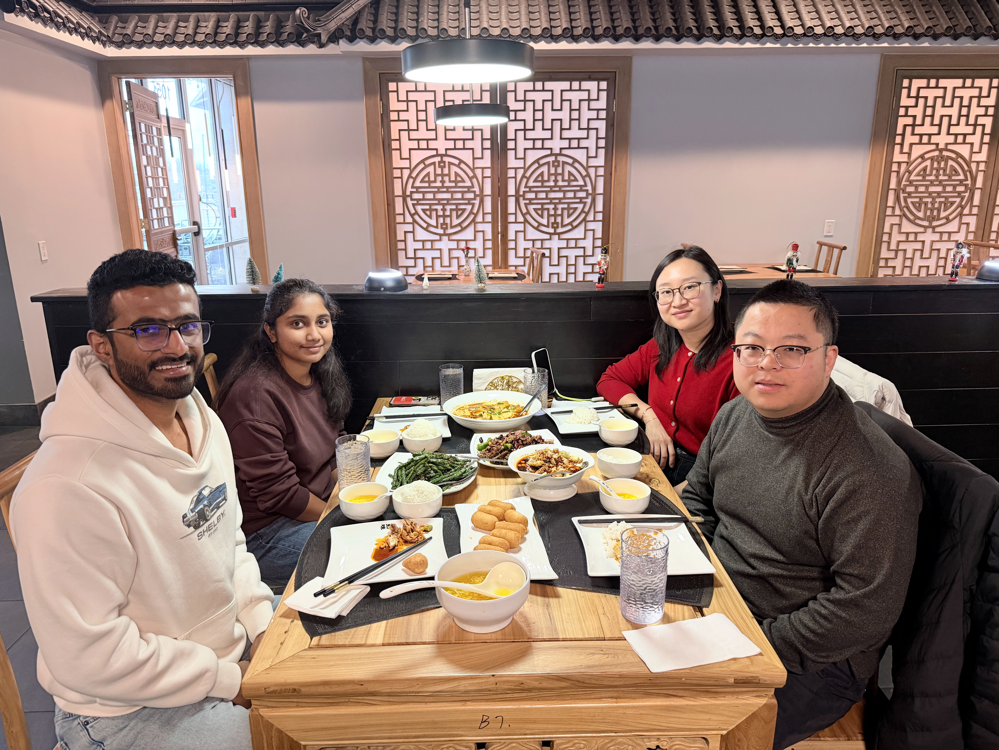
Group Meal · December 2025Closing the year with a winter meal together at Tea Horse Sichuan Bistro.